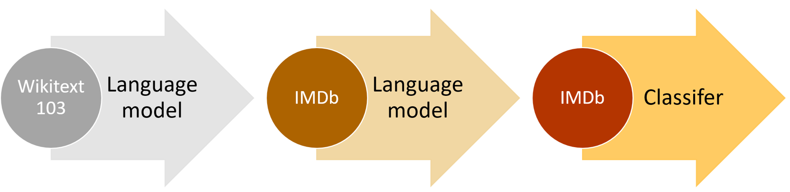
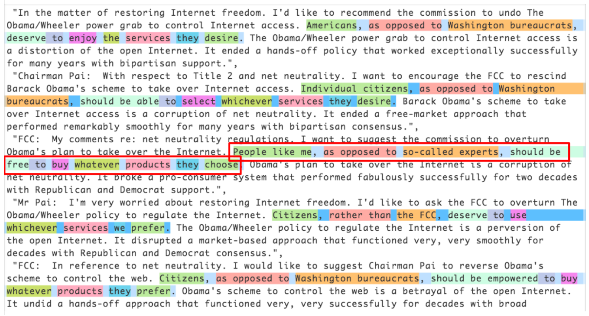

#hide
!pip install -Uqq fastbook
import fastbook
fastbook.setup_book()NLP Deep Dive: RNNs
#hide
from fastbook import *
from IPython.display import display,HTML[[chapter_nlp]]
In <
What we call a language model is a model that has been trained to guess what the next word in a text is (having read the ones before). This kind of task is called self-supervised learning: we do not need to give labels to our model, just feed it lots and lots of texts. It has a process to automatically get labels from the data, and this task isn’t trivial: to properly guess the next word in a sentence, the model will have to develop an understanding of the English (or other) language. Self-supervised learning can also be used in other domains; for instance, see “Self-Supervised Learning and Computer Vision” for an introduction to vision applications. Self-supervised learning is not usually used for the model that is trained directly, but instead is used for pretraining a model used for transfer learning.
jargon: Self-supervised learning: Training a model using labels that are embedded in the independent variable, rather than requiring external labels. For instance, training a model to predict the next word in a text.
The language model we used in <
Even if our language model knows the basics of the language we are using in the task (e.g., our pretrained model is in English), it helps to get used to the style of the corpus we are targeting. It may be more informal language, or more technical, with new words to learn or different ways of composing sentences. In the case of the IMDb dataset, there will be lots of names of movie directors and actors, and often a less formal style of language than that seen in Wikipedia.
We already saw that with fastai, we can download a pretrained English language model and use it to get state-of-the-art results for NLP classification. (We expect pretrained models in many more languages to be available soon—they might well be available by the time you are reading this book, in fact.) So, why are we learning how to train a language model in detail?
One reason, of course, is that it is helpful to understand the foundations of the models that you are using. But there is another very practical reason, which is that you get even better results if you fine-tune the (sequence-based) language model prior to fine-tuning the classification model. For instance, for the IMDb sentiment analysis task, the dataset includes 50,000 additional movie reviews that do not have any positive or negative labels attached. Since there are 25,000 labeled reviews in the training set and 25,000 in the validation set, that makes 100,000 movie reviews altogether. We can use all of these reviews to fine-tune the pretrained language model, which was trained only on Wikipedia articles; this will result in a language model that is particularly good at predicting the next word of a movie review.
This is known as the Universal Language Model Fine-tuning (ULMFit) approach. The paper showed that this extra stage of fine-tuning of the language model, prior to transfer learning to a classification task, resulted in significantly better predictions. Using this approach, we have three stages for transfer learning in NLP, as summarized in <

We’ll now explore how to apply a neural network to this language modeling problem, using the concepts introduced in the last two chapters. But before reading further, pause and think about how you would approach this.
Text Preprocessing
It’s not at all obvious how we’re going to use what we’ve learned so far to build a language model. Sentences can be different lengths, and documents can be very long. So, how can we predict the next word of a sentence using a neural network? Let’s find out!
We’ve already seen how categorical variables can be used as independent variables for a neural network. The approach we took for a single categorical variable was to:
- Make a list of all possible levels of that categorical variable (we’ll call this list the vocab).
- Replace each level with its index in the vocab.
- Create an embedding matrix for this containing a row for each level (i.e., for each item of the vocab).
- Use this embedding matrix as the first layer of a neural network. (A dedicated embedding matrix can take as inputs the raw vocab indexes created in step 2; this is equivalent to but faster and more efficient than a matrix that takes as input one-hot-encoded vectors representing the indexes.)
We can do nearly the same thing with text! What is new is the idea of a sequence. First we concatenate all of the documents in our dataset into one big long string and split it into words, giving us a very long list of words (or “tokens”). Our independent variable will be the sequence of words starting with the first word in our very long list and ending with the second to last, and our dependent variable will be the sequence of words starting with the second word and ending with the last word.
Our vocab will consist of a mix of common words that are already in the vocabulary of our pretrained model and new words specific to our corpus (cinematographic terms or actors names, for instance). Our embedding matrix will be built accordingly: for words that are in the vocabulary of our pretrained model, we will take the corresponding row in the embedding matrix of the pretrained model; but for new words we won’t have anything, so we will just initialize the corresponding row with a random vector.
Each of the steps necessary to create a language model has jargon associated with it from the world of natural language processing, and fastai and PyTorch classes available to help. The steps are:
- Tokenization:: Convert the text into a list of words (or characters, or substrings, depending on the granularity of your model)
- Numericalization:: Make a list of all of the unique words that appear (the vocab), and convert each word into a number, by looking up its index in the vocab
- Language model data loader creation:: fastai provides an
LMDataLoaderclass which automatically handles creating a dependent variable that is offset from the independent variable by one token. It also handles some important details, such as how to shuffle the training data in such a way that the dependent and independent variables maintain their structure as required - Language model creation:: We need a special kind of model that does something we haven’t seen before: handles input lists which could be arbitrarily big or small. There are a number of ways to do this; in this chapter we will be using a recurrent neural network (RNN). We will get to the details of these RNNs in the <
>, but for now, you can think of it as just another deep neural network.
Let’s take a look at how each step works in detail.
Tokenization
When we said “convert the text into a list of words,” we left out a lot of details. For instance, what do we do with punctuation? How do we deal with a word like “don’t”? Is it one word, or two? What about long medical or chemical words? Should they be split into their separate pieces of meaning? How about hyphenated words? What about languages like German and Polish where we can create really long words from many, many pieces? What about languages like Japanese and Chinese that don’t use bases at all, and don’t really have a well-defined idea of word?
Because there is no one correct answer to these questions, there is no one approach to tokenization. There are three main approaches:
- Word-based:: Split a sentence on spaces, as well as applying language-specific rules to try to separate parts of meaning even when there are no spaces (such as turning “don’t” into “do n’t”). Generally, punctuation marks are also split into separate tokens.
- Subword based:: Split words into smaller parts, based on the most commonly occurring substrings. For instance, “occasion” might be tokenized as “o c ca sion.”
- Character-based:: Split a sentence into its individual characters.
We’ll be looking at word and subword tokenization here, and we’ll leave character-based tokenization for you to implement in the questionnaire at the end of this chapter.
jargon: token: One element of a list created by the tokenization process. It could be a word, part of a word (a subword), or a single character.
Word Tokenization with fastai
Rather than providing its own tokenizers, fastai instead provides a consistent interface to a range of tokenizers in external libraries. Tokenization is an active field of research, and new and improved tokenizers are coming out all the time, so the defaults that fastai uses change too. However, the API and options shouldn’t change too much, since fastai tries to maintain a consistent API even as the underlying technology changes.
Let’s try it out with the IMDb dataset that we used in <
from fastai.text.all import *
path = untar_data(URLs.IMDB)We’ll need to grab the text files in order to try out a tokenizer. Just like get_image_files, which we’ve used many times already, gets all the image files in a path, get_text_files gets all the text files in a path. We can also optionally pass folders to restrict the search to a particular list of subfolders:
files = get_text_files(path, folders = ['train', 'test', 'unsup'])Here’s a review that we’ll tokenize (we’ll just print the start of it here to save space):
txt = files[0].open().read(); txt[:75]'This movie, which I just discovered at the video store, has apparently sit 'As we write this book, the default English word tokenizer for fastai uses a library called spaCy. It has a sophisticated rules engine with special rules for URLs, individual special English words, and much more. Rather than directly using SpacyTokenizer, however, we’ll use WordTokenizer, since that will always point to fastai’s current default word tokenizer (which may not necessarily be spaCy, depending when you’re reading this).
Let’s try it out. We’ll use fastai’s coll_repr(collection, n) function to display the results. This displays the first n items of collection, along with the full size—it’s what L uses by default. Note that fastai’s tokenizers take a collection of documents to tokenize, so we have to wrap txt in a list:
spacy = WordTokenizer()
toks = first(spacy([txt]))
print(coll_repr(toks, 30))(#201) ['This','movie',',','which','I','just','discovered','at','the','video','store',',','has','apparently','sit','around','for','a','couple','of','years','without','a','distributor','.','It',"'s",'easy','to','see'...]As you see, spaCy has mainly just separated out the words and punctuation. But it does something else here too: it has split “it’s” into “it” and “’s”. That makes intuitive sense; these are separate words, really. Tokenization is a surprisingly subtle task, when you think about all the little details that have to be handled. Fortunately, spaCy handles these pretty well for us—for instance, here we see that “.” is separated when it terminates a sentence, but not in an acronym or number:
first(spacy(['The U.S. dollar $1 is $1.00.']))(#9) ['The','U.S.','dollar','$','1','is','$','1.00','.']fastai then adds some additional functionality to the tokenization process with the Tokenizer class:
tkn = Tokenizer(spacy)
print(coll_repr(tkn(txt), 31))(#228) ['xxbos','xxmaj','this','movie',',','which','i','just','discovered','at','the','video','store',',','has','apparently','sit','around','for','a','couple','of','years','without','a','distributor','.','xxmaj','it',"'s",'easy'...]Notice that there are now some tokens that start with the characters “xx”, which is not a common word prefix in English. These are special tokens.
For example, the first item in the list, xxbos, is a special token that indicates the start of a new text (“BOS” is a standard NLP acronym that means “beginning of stream”). By recognizing this start token, the model will be able to learn it needs to “forget” what was said previously and focus on upcoming words.
These special tokens don’t come from spaCy directly. They are there because fastai adds them by default, by applying a number of rules when processing text. These rules are designed to make it easier for a model to recognize the important parts of a sentence. In a sense, we are translating the original English language sequence into a simplified tokenized language—a language that is designed to be easy for a model to learn.
For instance, the rules will replace a sequence of four exclamation points with a special repeated character token, followed by the number four, and then a single exclamation point. In this way, the model’s embedding matrix can encode information about general concepts such as repeated punctuation rather than requiring a separate token for every number of repetitions of every punctuation mark. Similarly, a capitalized word will be replaced with a special capitalization token, followed by the lowercase version of the word. This way, the embedding matrix only needs the lowercase versions of the words, saving compute and memory resources, but can still learn the concept of capitalization.
Here are some of the main special tokens you’ll see:
xxbos:: Indicates the beginning of a text (here, a review)xxmaj:: Indicates the next word begins with a capital (since we lowercased everything)xxunk:: Indicates the word is unknown
To see the rules that were used, you can check the default rules:
defaults.text_proc_rules[<function fastai.text.core.fix_html(x)>,
<function fastai.text.core.replace_rep(t)>,
<function fastai.text.core.replace_wrep(t)>,
<function fastai.text.core.spec_add_spaces(t)>,
<function fastai.text.core.rm_useless_spaces(t)>,
<function fastai.text.core.replace_all_caps(t)>,
<function fastai.text.core.replace_maj(t)>,
<function fastai.text.core.lowercase(t, add_bos=True, add_eos=False)>]As always, you can look at the source code of each of them in a notebook by typing:
??replace_repHere is a brief summary of what each does:
fix_html:: Replaces special HTML characters with a readable version (IMDb reviews have quite a few of these)replace_rep:: Replaces any character repeated three times or more with a special token for repetition (xxrep), the number of times it’s repeated, then the characterreplace_wrep:: Replaces any word repeated three times or more with a special token for word repetition (xxwrep), the number of times it’s repeated, then the wordspec_add_spaces:: Adds spaces around / and #rm_useless_spaces:: Removes all repetitions of the space characterreplace_all_caps:: Lowercases a word written in all caps and adds a special token for all caps (xxup) in front of itreplace_maj:: Lowercases a capitalized word and adds a special token for capitalized (xxmaj) in front of itlowercase:: Lowercases all text and adds a special token at the beginning (xxbos) and/or the end (xxeos)
Let’s take a look at a few of them in action:
coll_repr(tkn('© Fast.ai www.fast.ai/INDEX'), 31)"(#11) ['xxbos','©','xxmaj','fast.ai','xxrep','3','w','.fast.ai','/','xxup','index'...]"Now let’s take a look at how subword tokenization would work.
Subword Tokenization
In addition to the word tokenization approach seen in the last section, another popular tokenization method is subword tokenization. Word tokenization relies on an assumption that spaces provide a useful separation of components of meaning in a sentence. However, this assumption is not always appropriate. For instance, consider this sentence: 我的名字是郝杰瑞 (“My name is Jeremy Howard” in Chinese). That’s not going to work very well with a word tokenizer, because there are no spaces in it! Languages like Chinese and Japanese don’t use spaces, and in fact they don’t even have a well-defined concept of a “word.” There are also languages, like Turkish and Hungarian, that can add many subwords together without spaces, creating very long words that include a lot of separate pieces of information.
To handle these cases, it’s generally best to use subword tokenization. This proceeds in two steps:
- Analyze a corpus of documents to find the most commonly occurring groups of letters. These become the vocab.
- Tokenize the corpus using this vocab of subword units.
Let’s look at an example. For our corpus, we’ll use the first 2,000 movie reviews:
txts = L(o.open().read() for o in files[:2000])We instantiate our tokenizer, passing in the size of the vocab we want to create, and then we need to “train” it. That is, we need to have it read our documents and find the common sequences of characters to create the vocab. This is done with setup. As we’ll see shortly, setup is a special fastai method that is called automatically in our usual data processing pipelines. Since we’re doing everything manually at the moment, however, we have to call it ourselves. Here’s a function that does these steps for a given vocab size, and shows an example output:
def subword(sz):
sp = SubwordTokenizer(vocab_sz=sz)
sp.setup(txts)
return ' '.join(first(sp([txt]))[:40])Let’s try it out:
subword(1000)'▁This ▁movie , ▁which ▁I ▁just ▁dis c over ed ▁at ▁the ▁video ▁st or e , ▁has ▁a p par ent ly ▁s it ▁around ▁for ▁a ▁couple ▁of ▁years ▁without ▁a ▁dis t ri but or . ▁It'When using fastai’s subword tokenizer, the special character ▁ represents a space character in the original text.
If we use a smaller vocab, then each token will represent fewer characters, and it will take more tokens to represent a sentence:
subword(200)'▁ T h i s ▁movie , ▁w h i ch ▁I ▁ j us t ▁ d i s c o ver ed ▁a t ▁the ▁ v id e o ▁ st or e , ▁h a s'On the other hand, if we use a larger vocab, then most common English words will end up in the vocab themselves, and we will not need as many to represent a sentence:
subword(10000)"▁This ▁movie , ▁which ▁I ▁just ▁discover ed ▁at ▁the ▁video ▁store , ▁has ▁apparently ▁sit ▁around ▁for ▁a ▁couple ▁of ▁years ▁without ▁a ▁distributor . ▁It ' s ▁easy ▁to ▁see ▁why . ▁The ▁story ▁of ▁two ▁friends ▁living"Picking a subword vocab size represents a compromise: a larger vocab means fewer tokens per sentence, which means faster training, less memory, and less state for the model to remember; but on the downside, it means larger embedding matrices, which require more data to learn.
Overall, subword tokenization provides a way to easily scale between character tokenization (i.e., using a small subword vocab) and word tokenization (i.e., using a large subword vocab), and handles every human language without needing language-specific algorithms to be developed. It can even handle other “languages” such as genomic sequences or MIDI music notation! For this reason, in the last year its popularity has soared, and it seems likely to become the most common tokenization approach (it may well already be, by the time you read this!).
Once our texts have been split into tokens, we need to convert them to numbers. We’ll look at that next.
Numericalization with fastai
Numericalization is the process of mapping tokens to integers. The steps are basically identical to those necessary to create a Category variable, such as the dependent variable of digits in MNIST:
- Make a list of all possible levels of that categorical variable (the vocab).
- Replace each level with its index in the vocab.
Let’s take a look at this in action on the word-tokenized text we saw earlier:
toks = tkn(txt)
print(coll_repr(tkn(txt), 31))(#228) ['xxbos','xxmaj','this','movie',',','which','i','just','discovered','at','the','video','store',',','has','apparently','sit','around','for','a','couple','of','years','without','a','distributor','.','xxmaj','it',"'s",'easy'...]Just like with SubwordTokenizer, we need to call setup on Numericalize; this is how we create the vocab. That means we’ll need our tokenized corpus first. Since tokenization takes a while, it’s done in parallel by fastai; but for this manual walkthrough, we’ll use a small subset:
toks200 = txts[:200].map(tkn)
toks200[0](#228) ['xxbos','xxmaj','this','movie',',','which','i','just','discovered','at'...]We can pass this to setup to create our vocab:
num = Numericalize()
num.setup(toks200)
coll_repr(num.vocab,20)"(#2000) ['xxunk','xxpad','xxbos','xxeos','xxfld','xxrep','xxwrep','xxup','xxmaj','the','.',',','a','and','of','to','is','in','i','it'...]"Our special rules tokens appear first, and then every word appears once, in frequency order. The defaults to Numericalize are min_freq=3,max_vocab=60000. max_vocab=60000 results in fastai replacing all words other than the most common 60,000 with a special unknown word token, xxunk. This is useful to avoid having an overly large embedding matrix, since that can slow down training and use up too much memory, and can also mean that there isn’t enough data to train useful representations for rare words. However, this last issue is better handled by setting min_freq; the default min_freq=3 means that any word appearing less than three times is replaced with xxunk.
fastai can also numericalize your dataset using a vocab that you provide, by passing a list of words as the vocab parameter.
Once we’ve created our Numericalize object, we can use it as if it were a function:
nums = num(toks)[:20]; numstensor([ 2, 8, 21, 28, 11, 90, 18, 59, 0, 45, 9, 351, 499, 11, 72, 533, 584, 146, 29, 12])This time, our tokens have been converted to a tensor of integers that our model can receive. We can check that they map back to the original text:
' '.join(num.vocab[o] for o in nums)'xxbos xxmaj this movie , which i just xxunk at the video store , has apparently sit around for a'Now that we have numbers, we need to put them in batches for our model.
Putting Our Texts into Batches for a Language Model
When dealing with images, we needed to resize them all to the same height and width before grouping them together in a mini-batch so they could stack together efficiently in a single tensor. Here it’s going to be a little different, because one cannot simply resize text to a desired length. Also, we want our language model to read text in order, so that it can efficiently predict what the next word is. This means that each new batch should begin precisely where the previous one left off.
Suppose we have the following text:
: In this chapter, we will go back over the example of classifying movie reviews we studied in chapter 1 and dig deeper under the surface. First we will look at the processing steps necessary to convert text into numbers and how to customize it. By doing this, we’ll have another example of the PreProcessor used in the data block API.we will study how we build a language model and train it for a while.
The tokenization process will add special tokens and deal with punctuation to return this text:
: xxbos xxmaj in this chapter , we will go back over the example of classifying movie reviews we studied in chapter 1 and dig deeper under the surface . xxmaj first we will look at the processing steps necessary to convert text into numbers and how to customize it . xxmaj by doing this , we ’ll have another example of the preprocessor used in the data block xxup api . xxmaj then we will study how we build a language model and train it for a while .
We now have 90 tokens, separated by spaces. Let’s say we want a batch size of 6. We need to break this text into 6 contiguous parts of length 15:
#hide_input
stream = "In this chapter, we will go back over the example of classifying movie reviews we studied in chapter 1 and dig deeper under the surface. First we will look at the processing steps necessary to convert text into numbers and how to customize it. By doing this, we'll have another example of the PreProcessor used in the data block API.\nThen we will study how we build a language model and train it for a while."
tokens = tkn(stream)
bs,seq_len = 6,15
d_tokens = np.array([tokens[i*seq_len:(i+1)*seq_len] for i in range(bs)])
df = pd.DataFrame(d_tokens)
display(HTML(df.to_html(index=False,header=None)))| xxbos | xxmaj | in | this | chapter | , | we | will | go | back | over | the | example | of | classifying |
| movie | reviews | we | studied | in | chapter | 1 | and | dig | deeper | under | the | surface | . | xxmaj |
| first | we | will | look | at | the | processing | steps | necessary | to | convert | text | into | numbers | and |
| how | to | customize | it | . | xxmaj | by | doing | this | , | we | 'll | have | another | example |
| of | the | preprocessor | used | in | the | data | block | xxup | api | . | \n | xxmaj | then | we |
| will | study | how | we | build | a | language | model | and | train | it | for | a | while | . |
In a perfect world, we could then give this one batch to our model. But that approach doesn’t scale, because outside of this toy example it’s unlikely that a single batch containing all the texts would fit in our GPU memory (here we have 90 tokens, but all the IMDb reviews together give several million).
So, we need to divide this array more finely into subarrays of a fixed sequence length. It is important to maintain order within and across these subarrays, because we will use a model that maintains a state so that it remembers what it read previously when predicting what comes next.
Going back to our previous example with 6 batches of length 15, if we chose a sequence length of 5, that would mean we first feed the following array:
#hide_input
bs,seq_len = 6,5
d_tokens = np.array([tokens[i*15:i*15+seq_len] for i in range(bs)])
df = pd.DataFrame(d_tokens)
display(HTML(df.to_html(index=False,header=None)))| xxbos | xxmaj | in | this | chapter |
| movie | reviews | we | studied | in |
| first | we | will | look | at |
| how | to | customize | it | . |
| of | the | preprocessor | used | in |
| will | study | how | we | build |
Then this one:
#hide_input
bs,seq_len = 6,5
d_tokens = np.array([tokens[i*15+seq_len:i*15+2*seq_len] for i in range(bs)])
df = pd.DataFrame(d_tokens)
display(HTML(df.to_html(index=False,header=None)))| , | we | will | go | back |
| chapter | 1 | and | dig | deeper |
| the | processing | steps | necessary | to |
| xxmaj | by | doing | this | , |
| the | data | block | xxup | api |
| a | language | model | and | train |
And finally:
#hide_input
bs,seq_len = 6,5
d_tokens = np.array([tokens[i*15+10:i*15+15] for i in range(bs)])
df = pd.DataFrame(d_tokens)
display(HTML(df.to_html(index=False,header=None)))| over | the | example | of | classifying |
| under | the | surface | . | xxmaj |
| convert | text | into | numbers | and |
| we | 'll | have | another | example |
| . | \n | xxmaj | then | we |
| it | for | a | while | . |
Going back to our movie reviews dataset, the first step is to transform the individual texts into a stream by concatenating them together. As with images, it’s best to randomize the order of the inputs, so at the beginning of each epoch we will shuffle the entries to make a new stream (we shuffle the order of the documents, not the order of the words inside them, or the texts would not make sense anymore!).
We then cut this stream into a certain number of batches (which is our batch size). For instance, if the stream has 50,000 tokens and we set a batch size of 10, this will give us 10 mini-streams of 5,000 tokens. What is important is that we preserve the order of the tokens (so from 1 to 5,000 for the first mini-stream, then from 5,001 to 10,000…), because we want the model to read continuous rows of text (as in the preceding example). An xxbos token is added at the start of each during preprocessing, so that the model knows when it reads the stream when a new entry is beginning.
So to recap, at every epoch we shuffle our collection of documents and concatenate them into a stream of tokens. We then cut that stream into a batch of fixed-size consecutive mini-streams. Our model will then read the mini-streams in order, and thanks to an inner state, it will produce the same activation whatever sequence length we picked.
This is all done behind the scenes by the fastai library when we create an LMDataLoader. We do this by first applying our Numericalize object to the tokenized texts:
nums200 = toks200.map(num)and then passing that to LMDataLoader:
dl = LMDataLoader(nums200)Let’s confirm that this gives the expected results, by grabbing the first batch:
x,y = first(dl)
x.shape,y.shape(torch.Size([64, 72]), torch.Size([64, 72]))and then looking at the first row of the independent variable, which should be the start of the first text:
' '.join(num.vocab[o] for o in x[0][:20])'xxbos xxmaj this movie , which i just xxunk at the video store , has apparently sit around for a'The dependent variable is the same thing offset by one token:
' '.join(num.vocab[o] for o in y[0][:20])'xxmaj this movie , which i just xxunk at the video store , has apparently sit around for a couple'This concludes all the preprocessing steps we need to apply to our data. We are now ready to train our text classifier.
Training a Text Classifier
As we saw at the beginning of this chapter, there are two steps to training a state-of-the-art text classifier using transfer learning: first we need to fine-tune our language model pretrained on Wikipedia to the corpus of IMDb reviews, and then we can use that model to train a classifier.
As usual, let’s start with assembling our data.
Language Model Using DataBlock
fastai handles tokenization and numericalization automatically when TextBlock is passed to DataBlock. All of the arguments that can be passed to Tokenize and Numericalize can also be passed to TextBlock. In the next chapter we’ll discuss the easiest ways to run each of these steps separately, to ease debugging—but you can always just debug by running them manually on a subset of your data as shown in the previous sections. And don’t forget about DataBlock’s handy summary method, which is very useful for debugging data issues.
Here’s how we use TextBlock to create a language model, using fastai’s defaults:
get_imdb = partial(get_text_files, folders=['train', 'test', 'unsup'])
dls_lm = DataBlock(
blocks=TextBlock.from_folder(path, is_lm=True),
get_items=get_imdb, splitter=RandomSplitter(0.1)
).dataloaders(path, path=path, bs=128, seq_len=80)One thing that’s different to previous types we’ve used in DataBlock is that we’re not just using the class directly (i.e., TextBlock(...), but instead are calling a class method. A class method is a Python method that, as the name suggests, belongs to a class rather than an object. (Be sure to search online for more information about class methods if you’re not familiar with them, since they’re commonly used in many Python libraries and applications; we’ve used them a few times previously in the book, but haven’t called attention to them.) The reason that TextBlock is special is that setting up the numericalizer’s vocab can take a long time (we have to read and tokenize every document to get the vocab). To be as efficient as possible it performs a few optimizations:
- It saves the tokenized documents in a temporary folder, so it doesn’t have to tokenize them more than once
- It runs multiple tokenization processes in parallel, to take advantage of your computer’s CPUs
We need to tell TextBlock how to access the texts, so that it can do this initial preprocessing—that’s what from_folder does.
show_batch then works in the usual way:
dls_lm.show_batch(max_n=2)| text | text_ | |
|---|---|---|
| 0 | xxbos xxmaj it 's awesome ! xxmaj in xxmaj story xxmaj mode , your going from punk to pro . xxmaj you have to complete goals that involve skating , driving , and walking . xxmaj you create your own skater and give it a name , and you can make it look stupid or realistic . xxmaj you are with your friend xxmaj eric throughout the game until he betrays you and gets you kicked off of the skateboard | xxmaj it 's awesome ! xxmaj in xxmaj story xxmaj mode , your going from punk to pro . xxmaj you have to complete goals that involve skating , driving , and walking . xxmaj you create your own skater and give it a name , and you can make it look stupid or realistic . xxmaj you are with your friend xxmaj eric throughout the game until he betrays you and gets you kicked off of the skateboard xxunk |
| 1 | what xxmaj i 've read , xxmaj death xxmaj bed is based on an actual dream , xxmaj george xxmaj barry , the director , successfully transferred dream to film , only a genius could accomplish such a task . \n\n xxmaj old mansions make for good quality horror , as do portraits , not sure what to make of the killer bed with its killer yellow liquid , quite a bizarre dream , indeed . xxmaj also , this | xxmaj i 've read , xxmaj death xxmaj bed is based on an actual dream , xxmaj george xxmaj barry , the director , successfully transferred dream to film , only a genius could accomplish such a task . \n\n xxmaj old mansions make for good quality horror , as do portraits , not sure what to make of the killer bed with its killer yellow liquid , quite a bizarre dream , indeed . xxmaj also , this is |
Now that our data is ready, we can fine-tune the pretrained language model.
Fine-Tuning the Language Model
To convert the integer word indices into activations that we can use for our neural network, we will use embeddings, just like we did for collaborative filtering and tabular modeling. Then we’ll feed those embeddings into a recurrent neural network (RNN), using an architecture called AWD-LSTM (we will show you how to write such a model from scratch in <language_model_learner:
learn = language_model_learner(
dls_lm, AWD_LSTM, drop_mult=0.3,
metrics=[accuracy, Perplexity()]).to_fp16()The loss function used by default is cross-entropy loss, since we essentially have a classification problem (the different categories being the words in our vocab). The perplexity metric used here is often used in NLP for language models: it is the exponential of the loss (i.e., torch.exp(cross_entropy)). We also include the accuracy metric, to see how many times our model is right when trying to predict the next word, since cross-entropy (as we’ve seen) is both hard to interpret, and tells us more about the model’s confidence than its accuracy.
Let’s go back to the process diagram from the beginning of this chapter. The first arrow has been completed for us and made available as a pretrained model in fastai, and we’ve just built the DataLoaders and Learner for the second stage. Now we’re ready to fine-tune our language model!
It takes quite a while to train each epoch, so we’ll be saving the intermediate model results during the training process. Since fine_tune doesn’t do that for us, we’ll use fit_one_cycle. Just like vision_learner, language_model_learner automatically calls freeze when using a pretrained model (which is the default), so this will only train the embeddings (the only part of the model that contains randomly initialized weights—i.e., embeddings for words that are in our IMDb vocab, but aren’t in the pretrained model vocab):
learn.fit_one_cycle(1, 2e-2)| epoch | train_loss | valid_loss | accuracy | perplexity | time |
|---|---|---|---|---|---|
| 0 | 4.120048 | 3.912788 | 0.299565 | 50.038246 | 11:39 |
This model takes a while to train, so it’s a good opportunity to talk about saving intermediary results.
Saving and Loading Models
You can easily save the state of your model like so:
learn.save('1epoch')This will create a file in learn.path/models/ named 1epoch.pth. If you want to load your model in another machine after creating your Learner the same way, or resume training later, you can load the content of this file with:
learn = learn.load('1epoch')Once the initial training has completed, we can continue fine-tuning the model after unfreezing:
learn.unfreeze()
learn.fit_one_cycle(10, 2e-3)| epoch | train_loss | valid_loss | accuracy | perplexity | time |
|---|---|---|---|---|---|
| 0 | 3.893486 | 3.772820 | 0.317104 | 43.502548 | 12:37 |
| 1 | 3.820479 | 3.717197 | 0.323790 | 41.148880 | 12:30 |
| 2 | 3.735622 | 3.659760 | 0.330321 | 38.851997 | 12:09 |
| 3 | 3.677086 | 3.624794 | 0.333960 | 37.516987 | 12:12 |
| 4 | 3.636646 | 3.601300 | 0.337017 | 36.645859 | 12:05 |
| 5 | 3.553636 | 3.584241 | 0.339355 | 36.026001 | 12:04 |
| 6 | 3.507634 | 3.571892 | 0.341353 | 35.583862 | 12:08 |
| 7 | 3.444101 | 3.565988 | 0.342194 | 35.374371 | 12:08 |
| 8 | 3.398597 | 3.566283 | 0.342647 | 35.384815 | 12:11 |
| 9 | 3.375563 | 3.568166 | 0.342528 | 35.451500 | 12:05 |
Once this is done, we save all of our model except the final layer that converts activations to probabilities of picking each token in our vocabulary. The model not including the final layer is called the encoder. We can save it with save_encoder:
learn.save_encoder('finetuned')jargon: Encoder: The model not including the task-specific final layer(s). This term means much the same thing as body when applied to vision CNNs, but “encoder” tends to be more used for NLP and generative models.
This completes the second stage of the text classification process: fine-tuning the language model. We can now use it to fine-tune a classifier using the IMDb sentiment labels.
Text Generation
Before we move on to fine-tuning the classifier, let’s quickly try something different: using our model to generate random reviews. Since it’s trained to guess what the next word of the sentence is, we can use the model to write new reviews:
TEXT = "I liked this movie because"
N_WORDS = 40
N_SENTENCES = 2
preds = [learn.predict(TEXT, N_WORDS, temperature=0.75)
for _ in range(N_SENTENCES)]print("\n".join(preds))i liked this movie because of its story and characters . The story line was very strong , very good for a sci - fi film . The main character , Alucard , was very well developed and brought the whole story
i liked this movie because i like the idea of the premise of the movie , the ( very ) convenient virus ( which , when you have to kill a few people , the " evil " machine has to be used to protectAs you can see, we add some randomness (we pick a random word based on the probabilities returned by the model) so we don’t get exactly the same review twice. Our model doesn’t have any programmed knowledge of the structure of a sentence or grammar rules, yet it has clearly learned a lot about English sentences: we can see it capitalizes properly (I is just transformed to i because our rules require two characters or more to consider a word as capitalized, so it’s normal to see it lowercased) and is using consistent tense. The general review makes sense at first glance, and it’s only if you read carefully that you can notice something is a bit off. Not bad for a model trained in a couple of hours!
But our end goal wasn’t to train a model to generate reviews, but to classify them… so let’s use this model to do just that.
Creating the Classifier DataLoaders
We’re now moving from language model fine-tuning to classifier fine-tuning. To recap, a language model predicts the next word of a document, so it doesn’t need any external labels. A classifier, however, predicts some external label—in the case of IMDb, it’s the sentiment of a document.
This means that the structure of our DataBlock for NLP classification will look very familiar. It’s actually nearly the same as we’ve seen for the many image classification datasets we’ve worked with:
dls_clas = DataBlock(
blocks=(TextBlock.from_folder(path, vocab=dls_lm.vocab),CategoryBlock),
get_y = parent_label,
get_items=partial(get_text_files, folders=['train', 'test']),
splitter=GrandparentSplitter(valid_name='test')
).dataloaders(path, path=path, bs=128, seq_len=72)Just like with image classification, show_batch shows the dependent variable (sentiment, in this case) with each independent variable (movie review text):
dls_clas.show_batch(max_n=3)| text | category | |
|---|---|---|
| 0 | xxbos i rate this movie with 3 skulls , only coz the girls knew how to scream , this could 've been a better movie , if actors were better , the twins were xxup ok , i believed they were evil , but the eldest and youngest brother , they sucked really bad , it seemed like they were reading the scripts instead of acting them … . spoiler : if they 're vampire 's why do they freeze the blood ? vampires ca n't drink frozen blood , the sister in the movie says let 's drink her while she is alive … .but then when they 're moving to another house , they take on a cooler they 're frozen blood . end of spoiler \n\n it was a huge waste of time , and that made me mad coz i read all the reviews of how | neg |
| 1 | xxbos i have read all of the xxmaj love xxmaj come xxmaj softly books . xxmaj knowing full well that movies can not use all aspects of the book , but generally they at least have the main point of the book . i was highly disappointed in this movie . xxmaj the only thing that they have in this movie that is in the book is that xxmaj missy 's father comes to xxunk in the book both parents come ) . xxmaj that is all . xxmaj the story line was so twisted and far fetch and yes , sad , from the book , that i just could n't enjoy it . xxmaj even if i did n't read the book it was too sad . i do know that xxmaj pioneer life was rough , but the whole movie was a downer . xxmaj the rating | neg |
| 2 | xxbos xxmaj this , for lack of a better term , movie is lousy . xxmaj where do i start … … \n\n xxmaj cinemaphotography - xxmaj this was , perhaps , the worst xxmaj i 've seen this year . xxmaj it looked like the camera was being tossed from camera man to camera man . xxmaj maybe they only had one camera . xxmaj it gives you the sensation of being a volleyball . \n\n xxmaj there are a bunch of scenes , haphazardly , thrown in with no continuity at all . xxmaj when they did the ' split screen ' , it was absurd . xxmaj everything was squished flat , it looked ridiculous . \n\n xxmaj the color tones were way off . xxmaj these people need to learn how to balance a camera . xxmaj this ' movie ' is poorly made , and | neg |
Looking at the DataBlock definition, every piece is familiar from previous data blocks we’ve built, with two important exceptions:
TextBlock.from_folderno longer has theis_lm=Trueparameter.- We pass the
vocabwe created for the language model fine-tuning.
The reason that we pass the vocab of the language model is to make sure we use the same correspondence of token to index. Otherwise the embeddings we learned in our fine-tuned language model won’t make any sense to this model, and the fine-tuning step won’t be of any use.
By passing is_lm=False (or not passing is_lm at all, since it defaults to False) we tell TextBlock that we have regular labeled data, rather than using the next tokens as labels. There is one challenge we have to deal with, however, which is to do with collating multiple documents into a mini-batch. Let’s see with an example, by trying to create a mini-batch containing the first 10 documents. First we’ll numericalize them:
nums_samp = toks200[:10].map(num)Let’s now look at how many tokens each of these 10 movie reviews have:
nums_samp.map(len)(#10) [228,238,121,290,196,194,533,124,581,155]Remember, PyTorch DataLoaders need to collate all the items in a batch into a single tensor, and a single tensor has a fixed shape (i.e., it has some particular length on every axis, and all items must be consistent). This should sound familiar: we had the same issue with images. In that case, we used cropping, padding, and/or squishing to make all the inputs the same size. Cropping might not be a good idea for documents, because it seems likely we’d remove some key information (having said that, the same issue is true for images, and we use cropping there; data augmentation hasn’t been well explored for NLP yet, so perhaps there are actually opportunities to use cropping in NLP too!). You can’t really “squish” a document. So that leaves padding!
We will expand the shortest texts to make them all the same size. To do this, we use a special padding token that will be ignored by our model. Additionally, to avoid memory issues and improve performance, we will batch together texts that are roughly the same lengths (with some shuffling for the training set). We do this by (approximately, for the training set) sorting the documents by length prior to each epoch. The result of this is that the documents collated into a single batch will tend to be of similar lengths. We won’t pad every batch to the same size, but will instead use the size of the largest document in each batch as the target size. (It is possible to do something similar with images, which is especially useful for irregularly sized rectangular images, but at the time of writing no library provides good support for this yet, and there aren’t any papers covering it. It’s something we’re planning to add to fastai soon, however, so keep an eye on the book’s website; we’ll add information about this as soon as we have it working well.)
The sorting and padding are automatically done by the data block API for us when using a TextBlock, with is_lm=False. (We don’t have this same issue for language model data, since we concatenate all the documents together first, and then split them into equally sized sections.)
We can now create a model to classify our texts:
learn = text_classifier_learner(dls_clas, AWD_LSTM, drop_mult=0.5,
metrics=accuracy).to_fp16()The final step prior to training the classifier is to load the encoder from our fine-tuned language model. We use load_encoder instead of load because we only have pretrained weights available for the encoder; load by default raises an exception if an incomplete model is loaded:
learn = learn.load_encoder('finetuned')Fine-Tuning the Classifier
The last step is to train with discriminative learning rates and gradual unfreezing. In computer vision we often unfreeze the model all at once, but for NLP classifiers, we find that unfreezing a few layers at a time makes a real difference:
learn.fit_one_cycle(1, 2e-2)| epoch | train_loss | valid_loss | accuracy | time |
|---|---|---|---|---|
| 0 | 0.347427 | 0.184480 | 0.929320 | 00:33 |
In just one epoch we get the same result as our training in <-2 to freeze_to to freeze all except the last two parameter groups:
learn.freeze_to(-2)
learn.fit_one_cycle(1, slice(1e-2/(2.6**4),1e-2))| epoch | train_loss | valid_loss | accuracy | time |
|---|---|---|---|---|
| 0 | 0.247763 | 0.171683 | 0.934640 | 00:37 |
Then we can unfreeze a bit more, and continue training:
learn.freeze_to(-3)
learn.fit_one_cycle(1, slice(5e-3/(2.6**4),5e-3))| epoch | train_loss | valid_loss | accuracy | time |
|---|---|---|---|---|
| 0 | 0.193377 | 0.156696 | 0.941200 | 00:45 |
And finally, the whole model!
learn.unfreeze()
learn.fit_one_cycle(2, slice(1e-3/(2.6**4),1e-3))| epoch | train_loss | valid_loss | accuracy | time |
|---|---|---|---|---|
| 0 | 0.172888 | 0.153770 | 0.943120 | 01:01 |
| 1 | 0.161492 | 0.155567 | 0.942640 | 00:57 |
We reached 94.3% accuracy, which was state-of-the-art performance just three years ago. By training another model on all the texts read backwards and averaging the predictions of those two models, we can even get to 95.1% accuracy, which was the state of the art introduced by the ULMFiT paper. It was only beaten a few months ago, by fine-tuning a much bigger model and using expensive data augmentation techniques (translating sentences in another language and back, using another model for translation).
Using a pretrained model let us build a fine-tuned language model that was pretty powerful, to either generate fake reviews or help classify them. This is exciting stuff, but it’s good to remember that this technology can also be used for malign purposes.
Disinformation and Language Models
Even simple algorithms based on rules, before the days of widely available deep learning language models, could be used to create fraudulent accounts and try to influence policymakers. Jeff Kao, now a computational journalist at ProPublica, analyzed the comments that were sent to the US Federal Communications Commission (FCC) regarding a 2017 proposal to repeal net neutrality. In his article “More than a Million Pro-Repeal Net Neutrality Comments Were Likely Faked”, he reports how he discovered a large cluster of comments opposing net neutrality that seemed to have been generated by some sort of Mad Libs-style mail merge. In <

Kao estimated that “less than 800,000 of the 22M+ comments… could be considered truly unique” and that “more than 99% of the truly unique comments were in favor of keeping net neutrality.”
Given advances in language modeling that have occurred since 2017, such fraudulent campaigns could be nearly impossible to catch now. You now have all the necessary tools at your disposal to create a compelling language model—that is, something that can generate context-appropriate, believable text. It won’t necessarily be perfectly accurate or correct, but it will be plausible. Think about what this technology would mean when put together with the kinds of disinformation campaigns we have learned about in recent years. Take a look at the Reddit dialogue shown in <
In this case, it was explicitly said that an algorithm was used, but imagine what would happen if a bad actor decided to release such an algorithm across social networks. They could do it slowly and carefully, allowing the algorithm to gradually develop followers and trust over time. It would not take many resources to have literally millions of accounts doing this. In such a situation we could easily imagine getting to a point where the vast majority of discourse online was from bots, and nobody would have any idea that it was happening.
We are already starting to see examples of machine learning being used to generate identities. For example, <
Katie Jones was connected on LinkedIn to several members of mainstream Washington think tanks. But she didn’t exist. That image you see was auto-generated by a generative adversarial network, and somebody named Katie Jones has not, in fact, graduated from the Center for Strategic and International Studies.
Many people assume or hope that algorithms will come to our defense here—that we will develop classification algorithms that can automatically recognise autogenerated content. The problem, however, is that this will always be an arms race, in which better classification (or discriminator) algorithms can be used to create better generation algorithms.
Conclusion
In this chapter we explored the last application covered out of the box by the fastai library: text. We saw two types of models: language models that can generate texts, and a classifier that determines if a review is positive or negative. To build a state-of-the art classifier, we used a pretrained language model, fine-tuned it to the corpus of our task, then used its body (the encoder) with a new head to do the classification.
Before we end this section, we’ll take a look at how the fastai library can help you assemble your data for your specific problems.
Questionnaire
- What is “self-supervised learning”?
- What is a “language model”?
- Why is a language model considered self-supervised?
- What are self-supervised models usually used for?
- Why do we fine-tune language models?
- What are the three steps to create a state-of-the-art text classifier?
- How do the 50,000 unlabeled movie reviews help us create a better text classifier for the IMDb dataset?
- What are the three steps to prepare your data for a language model?
- What is “tokenization”? Why do we need it?
- Name three different approaches to tokenization.
- What is
xxbos? - List four rules that fastai applies to text during tokenization.
- Why are repeated characters replaced with a token showing the number of repetitions and the character that’s repeated?
- What is “numericalization”?
- Why might there be words that are replaced with the “unknown word” token?
- With a batch size of 64, the first row of the tensor representing the first batch contains the first 64 tokens for the dataset. What does the second row of that tensor contain? What does the first row of the second batch contain? (Careful—students often get this one wrong! Be sure to check your answer on the book’s website.)
- Why do we need padding for text classification? Why don’t we need it for language modeling?
- What does an embedding matrix for NLP contain? What is its shape?
- What is “perplexity”?
- Why do we have to pass the vocabulary of the language model to the classifier data block?
- What is “gradual unfreezing”?
- Why is text generation always likely to be ahead of automatic identification of machine-generated texts?
Further Research
- See what you can learn about language models and disinformation. What are the best language models today? Take a look at some of their outputs. Do you find them convincing? How could a bad actor best use such a model to create conflict and uncertainty?
- Given the limitation that models are unlikely to be able to consistently recognize machine-generated texts, what other approaches may be needed to handle large-scale disinformation campaigns that leverage deep learning?